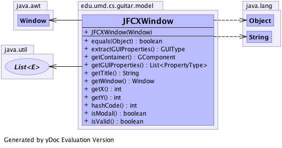

edu.umd.cs.guitar.model
Class JFCXWindow
java.lang.Object
 edu.umd.cs.guitar.model.GWindow
edu.umd.cs.guitar.model.JFCXWindow
edu.umd.cs.guitar.model.GWindow
edu.umd.cs.guitar.model.JFCXWindow
- All Implemented Interfaces:
- edu.umd.cs.guitar.model.GObject
public class JFCXWindow
- extends edu.umd.cs.guitar.model.GWindow
Implementation for edu.umd.cs.guitar.model.GWindow for Java Swing
Generated by yDoc Evaluation Version
- Author:
- Bao Nguyen
- See Also:
edu.umd.cs.guitar.model.GWindow-
-

|
Constructor Summary |
JFCXWindow(java.awt.Window window)
Constructor |
| Methods inherited from class edu.umd.cs.guitar.model.GWindow |
extractWindow, isRoot, setRoot |
| Methods inherited from class java.lang.Object |
clone, finalize, getClass, notify, notifyAll, toString, wait, wait, wait |
JFCXWindow
public JFCXWindow(java.awt.Window window)
- Constructor
- Parameters:
window -
getWindow
public java.awt.Window getWindow()
- Get the JFC window object.
- Returns:
- the window
extractGUIProperties
public edu.umd.cs.guitar.model.data.GUIType extractGUIProperties()
- Specified by:
extractGUIProperties in class edu.umd.cs.guitar.model.GWindow
getContainer
public edu.umd.cs.guitar.model.GComponent getContainer()
- Specified by:
getContainer in class edu.umd.cs.guitar.model.GWindow
isModal
public boolean isModal()
- Specified by:
isModal in class edu.umd.cs.guitar.model.GWindow
getTitle
public java.lang.String getTitle()
getGUIProperties
public java.util.List<edu.umd.cs.guitar.model.data.PropertyType> getGUIProperties()
hashCode
public int hashCode()
- Overrides:
hashCode in class java.lang.Object
equals
public boolean equals(java.lang.Object obj)
- Specified by:
equals in class edu.umd.cs.guitar.model.GWindow
isValid
public boolean isValid()
- Specified by:
isValid in class edu.umd.cs.guitar.model.GWindow
getX
public int getX()
getY
public int getY()